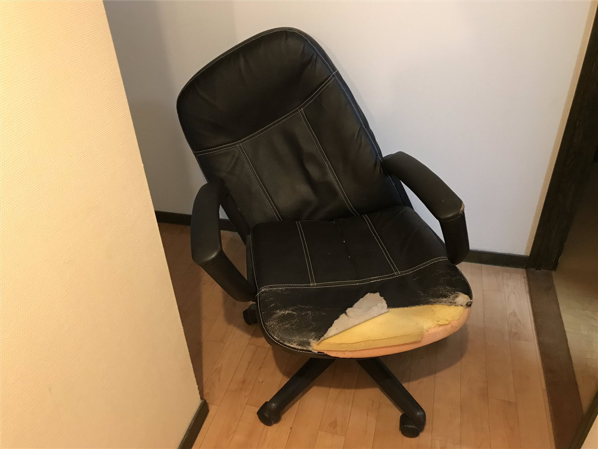

1月11日：椅子が崩壊した
公開日：

今日の昼頃、原稿の校正をしようとプリントアウトし、ドカッと椅子の背にもたれてウーンッ！と背筋を伸ばすと、バキッという音がし、気が付いたら頭から床へ真っ逆さまに転がり落ちていた。"マガリャンイス"と名づけ、愛用していた我が椅子が、とうとう天に召されたらしい。ひじ置きと背もたれをつないでいたボルトがすっぽりと抜け、全体が右へと傾いでいる。
親父からパクった椅子に、マガリャンイスっていう名前を付ける
— 平成JUMPやなぎ (@daruyanagi) March 13, 2017
そもそもこの椅子は一昨年、根元からボッキリと折れたうちの椅子の代わりに、親父の部屋から強奪したものだった（そのときもひっくり返って、体にごく軽い傷と、心に致命傷を負った）。
親父は家にいるとき、いつもリビングでごろごろと TV をみており、自分の部屋に戻ることなどほとんどない。そのくせ自分の部屋にはデカいベッドと机、椅子を置いているのだ、しかもそこそこいいものを。というわけで、それをこっそりいただいて、リビングで使っていた折りたたみ椅子と入れ替えたのだが――もともとが古い椅子だったので、リクライニングの微調整が効かなかったり、表皮が破れてスポンジが出たりと、あらゆるところに死相が現われていた。そろそろ終わりかと薄々は感じていたのだが……いざ壊れると、自分がデブになったことを突き付けられたようで甚だ不快だ。いや、なに、自分はほとんど一日椅子に座って過ごしているから、よそ様よりちょっとだけ椅子の消耗が早いだけなのだろうが……。
――それはともかく。
今日の仕事はこのグラグラする椅子で何とかやり過ごしたのだけど、つい背もたれが壊れてしまっていることを忘れて寄り掛かり、そのまま転げ落ちるということをやっていたら、Twitter でみかねたのか、近所の U さんが古い椅子をくれると申し出てくれた。ちょうど椅子を買い替えたらしい。ありがたく自宅まで―徒歩……1分かな？―取りに行った。
それがこれ！
すばらしい……上下の調整やリクライニングはもちろん、前傾の調整も行える。"マガリャンイス"よりも背中とお尻にサポートがあり、文明を感じる。――これはいいものだ！ 後でちゃんとお礼をしなければならない。とりあえず、自分のお仕事環境が格段に進歩して大満足だ。